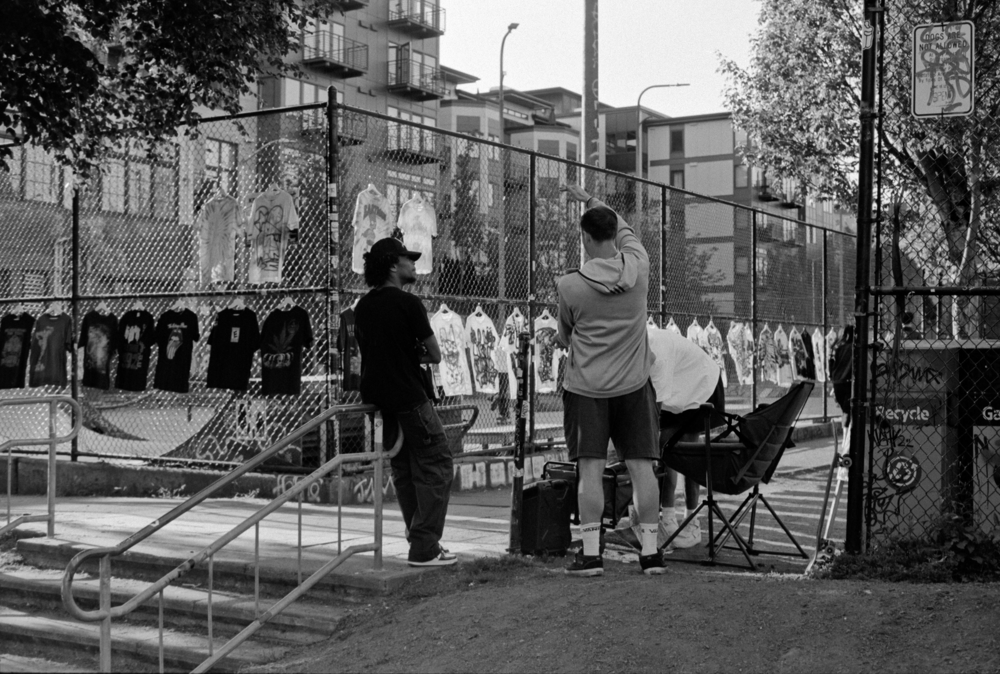
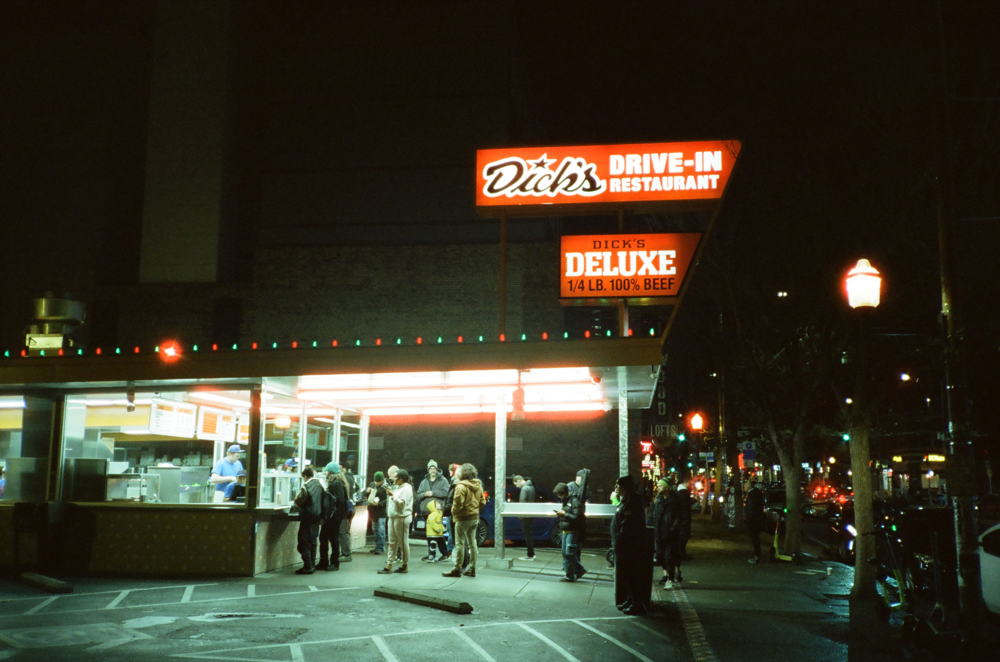

digital photowall
a small collection of what i’ve shot. most of it will be film because those shots make me happy.
(if you want to make them bigger, right click and click “open in new tab”. i really don’t wanna wrestle with this theme any longer its 2:15am and i only had 1 cup of coffee today)
street photography⌗
yes yes i’m another hipster who picks up a camera and immediately becomes a “Street Photographer”. but i have genuine love for the style. for better or for worse i live in an incredibly unique time and i want to document the world through my eyes (editor’s note: you have no idea how hard it was to not write “through my lens”)
|  |
|---|
seattle just being a vibe⌗
this city has a way of just being weirdly timeless.
other bw⌗
something about holding a strip of plastic with silver on it adds a sense of physicality that i love. i even developed some of these myself
 |
|---|
other color⌗
this is chemical magic. i know whats going on, but it’s still chemical magic
|  |
|---|